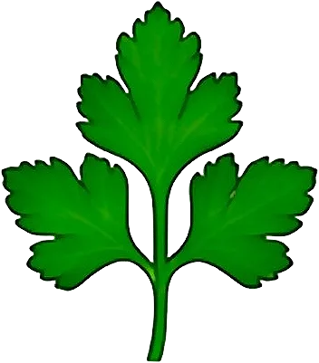

Persil

Plat ou frisé, cousin botanique de la carotte.
- Saison : mars, avril, mai, juin, juillet, août, septembre, octobre, novembre
- Pleine saison : mai, juin
- Famille botanique : Apiacées
Histoire
Originaire de Méditerranée orientale, le persil était utilisé par les Grecs pour tresser des couronnes, avant de devenir une herbe culinaire chez les Romains. Charlemagne le fait inscrire parmi les plantes à cultiver dans les jardins de ses domaines.
Origine et régions de production
Le persil est cultivé presque partout en France :
- Provence-Alpes-Côte d’Azur
- Bretagne
- Île-de-France
Bienfaits
Le persil est bien plus qu’une décoration :
- Vitamine C : Il en contient beaucoup, à condition d’être consommé cru.
- Vitamine K : Présente en grande quantité.
- Chlorophylle : Il rafraîchit l’haleine.
- Relève sans sel : Idéal ciselé en fin de préparation.
Variétés
- Persil plat : Plus parfumé, pour cuisiner.
- Persil frisé : Plus doux, souvent décoratif.
- Persil tubéreux : On mange sa racine, comme un panais.
Conserver sans gaspiller
- Conservation : En bouquet dans un verre d’eau au frigo : 1 à 2 semaines.
- Congélation : Ciselé, en sachet : jusqu’à 6 mois. Il s’émiette directement surgelé.
- Rien ne se jette : Les tiges parfument les bouillons et les soupes. Le persil fané se mixe en sauce verte.